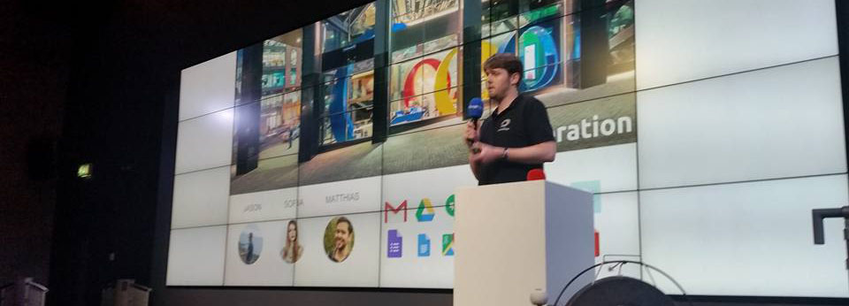
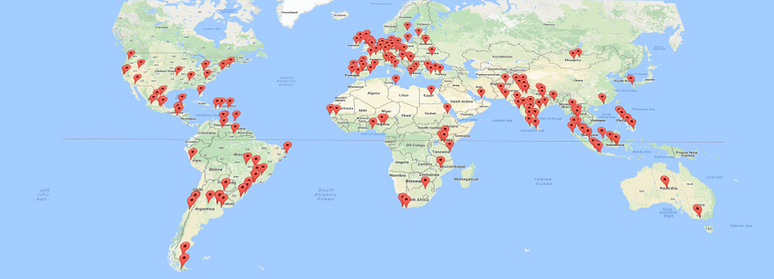
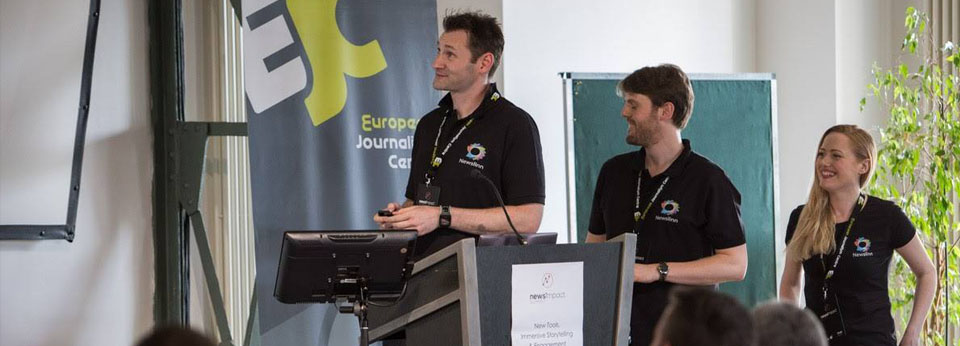
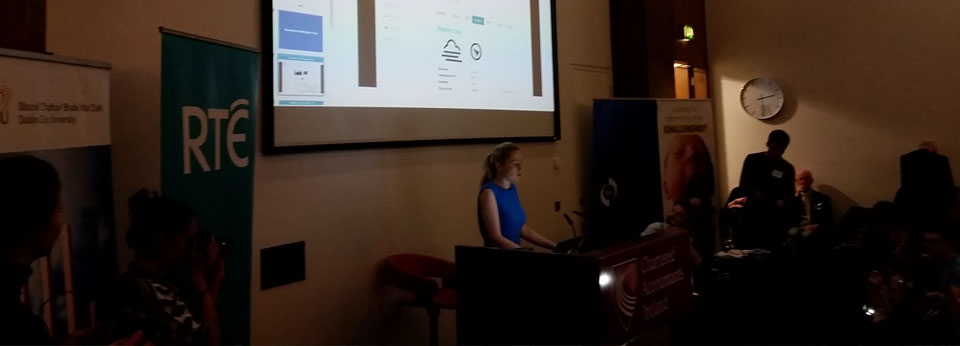

Newslinn is Sunsetting
Newslinn as a platform is no longer active and is officially in sunsetting period. chevron_rightRead more here

Our mission is to help citizens connect with journalists.
Newslinn is a network for citizens and organisations to follow, share and chat with with verified journalists. We create Apps that change how citizens and businesses communicate with journalists.
We aim to remove the limitations that spam email and social networks have put on contacting, discovering, following and sharing with journalists.
For citizens we've developed Smartphone Photo Sharing Apps. For businesses we've developed Press Page Web Apps.
We are recognised by Google, the European Journalism Centre and we are part funded by Google's Digital News Initiative Fund.
2,000 journalists have joined Newslinn as of January 2017.
Newslinn was founded in 2014 by 3 co-founders - and the core citizen-to-journalist network launched in 2016.
Our network is free for journalists and open for people to share any type of news, whether it's protests and activism or local community events and personal success stories.
Our technical focus is on researching and building real-time photo verification technology so photos can be verified and shared with journalists in seconds using Newslinn's Smartphone Apps and Web Apps.
We have a proven track record of applying artificial intelligence and machine learning technology to solve complex problems in online real-time systems. We're a team of co-founders x 3 based in Dublin, Ireland.
Co-Founders: Shane Devane, Suzanne Kennedy, Alan Mac Kenna
The current version of the platform focuses on sharing photos in real-time and incorporates a mixture of technology to aid in verification including artificial intelligence, two-factor user authentication, historical weather data and GPS location data.
By providing a dedicated platform for sharing news we remove some of the risks people face when sharing news on social networks and some of the challenges journalists face with news verification.
To sustain a dedicated news sharing platform we have developed Press Pages for organisations so that they can share company updates, information, photos and PR material with journalists on a closed-network that has been designed around the needs of journalists.
Newslinn is free for journalists and citizens.
Businesses that require additional cloud storage beyond our free tier for their PR material are charged a subscription fee.